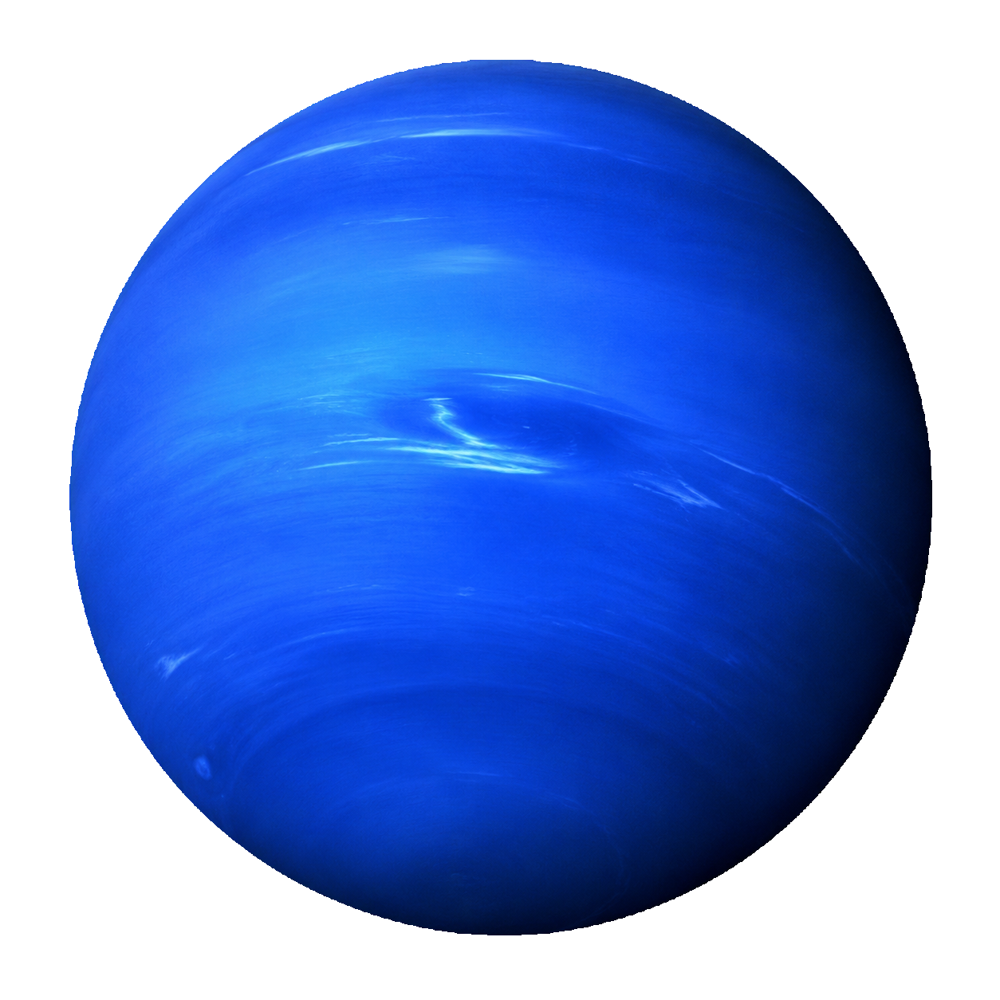
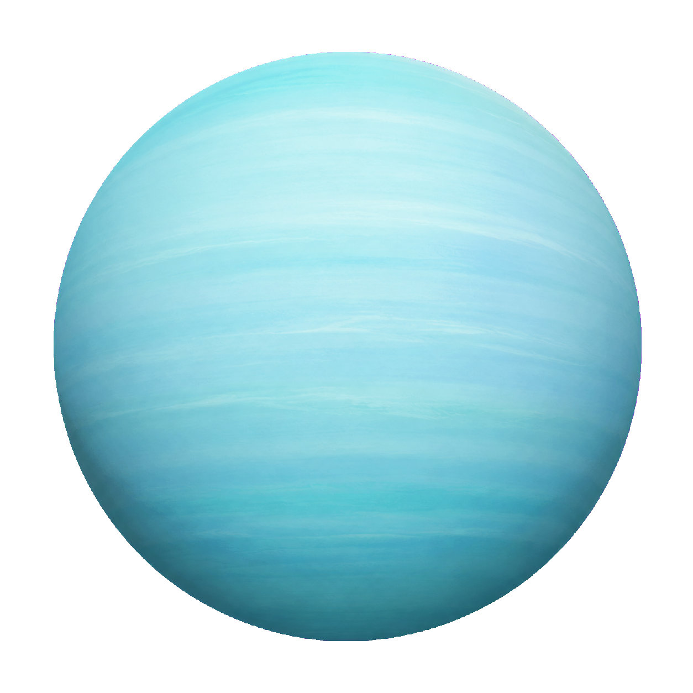
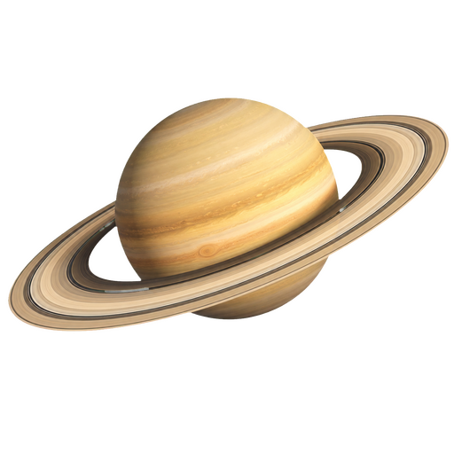
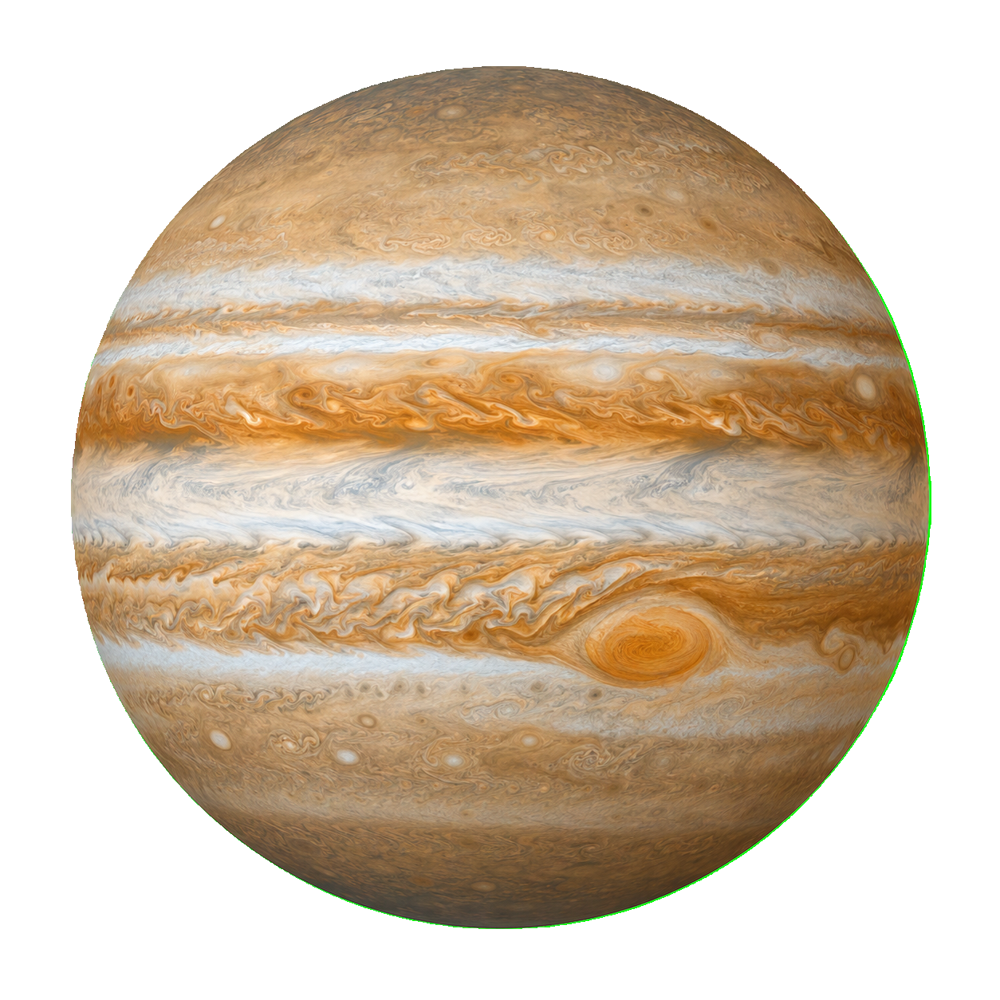
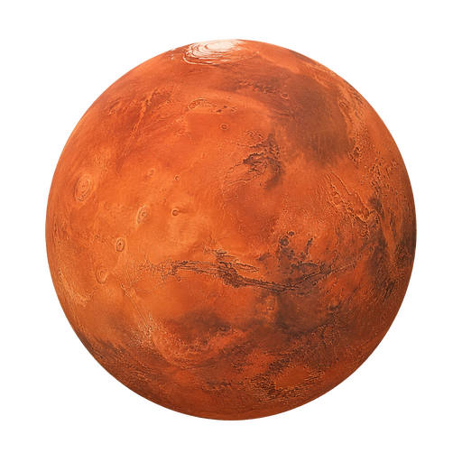
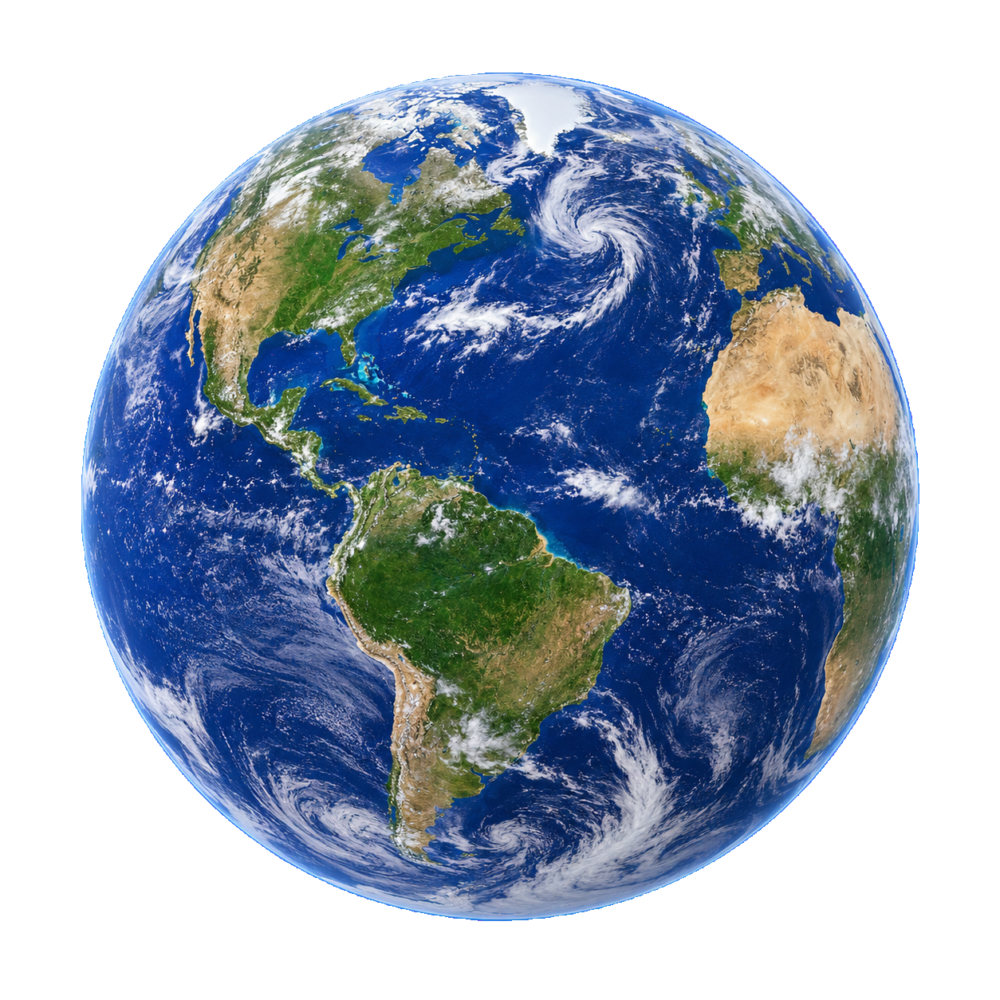

Exploradores da Matemática
Prof.ª Ana Martins
Missões, descobertas e jogos para aprender no seu ritmo. Uma jornada matemática para os anos iniciais.
Aprendizado seguro e divertido
Para estudantes, famílias e escolas.
PASSO 1 DE 2
Escolha seu perfil para criar uma nova conta.
Já possui uma conta?
PASSO 2 DE 2
Preencha os dados abaixo para começar.
Já possui uma conta?
Tudo pronto
Sua conta foi criada. Prepare-se para explorar um universo de descobertas.
PAINEL DO ADMINISTRADOR
Analise os novos pedidos de acesso à plataforma.
Cadastre, edite ou remova professores da plataforma.
| Professor | Escola | Turmas | Status | Ações |
|---|
Visão geral das turmas ativas na Órbita.
Prof.ª Ana Martins
Prof. Carlos Lima
Prof.ª Juliana Alves
Prof. Rafael Souza
Acompanhe os conteúdos disponíveis por etapa.
12 missões • 120 atividades
10 missões • 96 atividades
8 missões • 72 atividades
9 missões • 84 atividades
3 níveis • 30 atividades
10 missões • 90 atividades
Indicadores gerais de participação e aprendizagem.
Atividades concluídas nos últimos seis meses
GESTÃO DE PROFESSORES
PAINEL DO PROFESSOR
Acompanhe as jornadas de aprendizagem das suas turmas.
Média por turma cadastrada
Últimos acessos dos estudantes
Cadastre turmas e compartilhe o código de acesso com os estudantes.
Cadastre estudantes e escolha a trilha de cada um.
| Estudante / login | Turma | Trilha | Acesso | Ações |
|---|
Acompanhe o avanço individual em cada trilha.
Identifique os conteúdos que precisam ser retomados.
Quantidade de erros registrados por conteúdo
Consulte resultados coletivos ou o desempenho de um estudante.
GESTÃO DE TURMAS
GESTÃO DE ESTUDANTES
MINHA JORNADA
Sua próxima missão matemática está esperando por você.
Descobertas espaciais
Encontre os 3 pares antes de esgotar suas chances e conquiste estrelas.
Gire uma vez e descubra quantas estrelas o planeta sorteado vale.
Memorize as cartas e escolha a constelação de maior valor.
Acompanhe o copo que esconde o meteoro e tente encontrá-lo.
Arraste as seis peças e reconstrua a imagem do Sistema Solar.
Encontre os 4 pares antes de esgotar suas chances e conquiste estrelas.
Complete as missões para desbloquear novas descobertas.
Assista à explicação antes de começar ou sempre que precisar revisar.
QUESTÃO 1
Você encontrou a resposta correta.
Suas recompensas foram adicionadas à sua carteira.
Jogue a Sorte ou Revés antes de seguir para a próxima missão.
Encontre os três pares antes de errar três combinações de cartas.
Você tem um giro. O planeta indicado pela seta define sua pontuação.

Netuno
Urano
Saturno
Júpiter
Marte
Terra ★Observe as cartas, acompanhe o embaralhamento e faça uma única escolha.
Veja onde está o meteoro, acompanhe o copo durante os movimentos e faça sua escolha.
Observe os copos restantes.
Arraste cada peça para o espaço correto. No celular, você também pode tocar na peça e depois no espaço.
Organize novamente as peças.
Encontre os quatro pares antes de errar três combinações de cartas.
Conheça Aura Rubre e acompanhe suas descobertas nos nove planetas do sistema.
0 XP · Cada diário de planeta completo vale 1 XP.
Desbloqueie planetas com estrelas e colecione suas figurinhas com moedas.
Suas próximas histórias estão entre as estrelas.
Monte seu personagem do seu jeito e dê um nome para ele.
Seu companheiro de aventuras!
Veja tudo o que você já conquistou nessa jornada.
Você está começando uma grande aventura matemática.